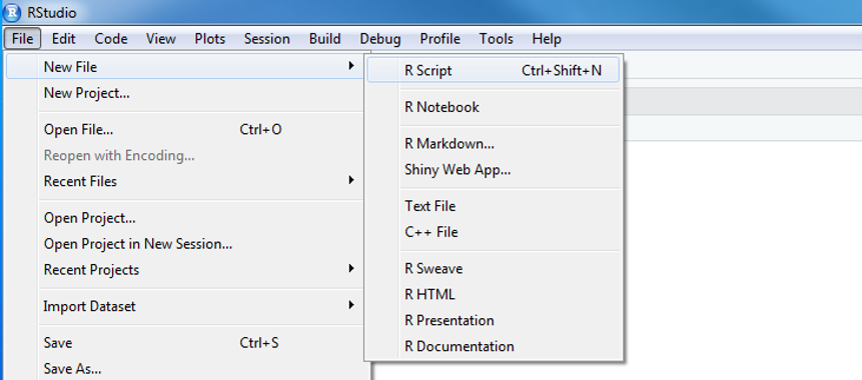

You and BB8 have arrived just in time. Rey needs your help!
Rey needs to travel to Tatooine, but years of scrapping ship parts hasn’t been kind to her lungs. Using historic pollution levels your goal is to find the best month for Rey to visit the dusty surface of Tatooine.


We are Melinda, Vallen, Jaime, Kristie & Dorian.
We like R.
We aren’t computer scientists and that’s okay!
We make lots of mistakes. You can laugh at us.
Let’s launch ourselves into the unknown and use R to introduce ourselves. Consider this an RStudio warm-up. We’ll use R to introduce ourselves and the data we love.

Share:
Good news: If you do something with data over and over again, this could be something you can automate in R.

You can assign values to new objects using the “left arrow”.
Left arrow
x <- 5
This is written by typing a less-than sign followed by a hyphen. It’s more officially known as the assignment operator. Try adding the code below to your R script and assign a value to an object called my_name.
my_name <- "Your Name" # Text and characters are put in quotes
miles_traveled <- 1869 # A number
# A list of data I use
my_data_types <- c("PAHs", "Air Toxics", "Ultrafine particles")
best_snack_in_the_universe <- "Air Heads" Now, you can type my_name into your console (lower left hand quadrant) and your entry will be returned.
my_name## [1] "Your Name"miles_traveled## [1] 1869To run everything at once, you can highlight all of the code you’ve written in the Code Editor and push
CTRL + ENTER.
Now we can create a data table, which is also called a data.frame().
# Put the 4 items into a table
all_about_me <- data.frame(name = my_name,
miles_traveled = miles_traveled,
data_types = my_data_types,
best_snack = best_snack_in_the_universe)Let’s bounce around the room and introduce ourselves with help from our R scripts.
GET R PACKAGES
To use a new package in R you first need to install it – much like a free App on your phone. To save time on installation, you can copy the text below and paste it into the RStudio console found on the left-side of the screen when you open RStudio.
new_packages <- c("readr", "readxl", "ggplot2", "lubridate", "leaflet", "sf")
install.packages(new_packages)
Then press ENTER to begin the installation. If all goes well, you should start to see some messages appear similar to this, which provide information on the installation progress.

Congrats rebel droid!

Rey needs to visit Tatooine to help the Rebel Alliance, and we have ozone data to help her decide what month we should visit – preferrably the month with the lowest ozone concentration. The goal for today is to give Rey a nice chart of monthly ozone concentrations to help her plan.
To complete this challenge we’ll follow the general roadmap below.

See the R Community page.

Lucky for us, programming doesn’t have to be a bunch of math equations. R allows you to write your data analysis in a step-by-step fashion, much like creating a recipe for cookies. And just like a recipe, we can start at the top and read our way down to the bottom.
We’ll make a new project for our investigation of ozone on Tatooine.
Step 1: Start a new project
"NTF-2019"Step 2: Open a new script
Rey.R or ozone.R will work well
1. Code Editor
This is where you write your scripts and document your work. The tabs at the top of the code editor allow you to view scripts and data sets you have open. This is where you’ll spend most of your time.
2. Console
This is where code is actually executed by the computer. It shows code that you have run and any errors, warnings, or other messages resulting from that code. You can input code directly into the console and run it, but it won’t be saved for later. That’s why we like to run all of our code directly from a script in the code editor.
3. Workspace
This pane shows all of the objects and functions that you have created, as well as a history of the code you have run during your current session. The environment tab shows all of your objects and functions. The history tab shows the code you have run. Note the broom icon below the Connections tab. This cleans shop and allows you to clear all of the objects in your workspace.
4. Plots and files
These tabs allow you to view and open files in your current directory, view plots and other visual objects like maps, view your installed packages and their functions, and access the help window. If at anytime you’re unsure what a function does, enter it’s name after a question mark. For example, try entering ?mean into the console and push ENTER.

library(readr)
air_data <- read_csv("https://itep-r.netlify.com/data/OZONE_samples.csv")| SITE | Date | Hour | OZONE | TEMP_F |
|---|---|---|---|---|
| 27-137-7554 | 6/15/2016 | 0 | 17 | 69.8 |
| 27-137-7554 | 9/5/2016 | 1 | 10 | 64.4 |
| 27-137-7001 | 8/31/2016 | 3 | 6 | 69.8 |
| 27-137-7554 | 7/16/2018 | 0 | 10 | 72.2 |
| 27-137-7001 | 5/25/2017 | 1 | 16 | 79.4 |


There are two great packages that can help us with cleaning header names. Let’s install them!
install.packages("janitor")
install.packages("dplyr")library()library(janitor)
library(dplyr)
# General cleaning for all columns
air_data <- clean_names(air_data)
# Change and set specific names
air_data <- rename(air_data,
lat = latitude,
lon = longitude)
library(ggplot2)
ggplot(air_data, aes(x = temp_f, y = ozone, color = site)) +
geom_point(size = 7, alpha = 0.3) 
Some functions to get to know your data.
| Function | Information |
|---|---|
names(scrap) |
column names |
nrow(...) |
number of rows |
ncol(...) |
number of columns |
summary(...) |
summary of all column values (ex. max, mean, median) |
glimpse(...) |
column names + a glimpse of first values (requires dplyr package) |
glimpse() and summary()Use the glimpse() function to find out what type and how much data you have.
Use the summary() function to get a quick report of your numeric data.
library(dplyr)
# Glimpse the columns of your data and their first few contents
glimpse(air_data)## Observations: 1,237
## Variables: 15
## $ site <chr> "27-137-7001", "27-137-7001", "27-137-7001", "27-1...
## $ date <chr> "4/1/2016", "4/2/2016", "4/3/2016", "4/4/2016", "4...
## $ hour <dbl> 4, 3, 5, 0, 2, 4, 3, 1, 1, 2, 4, 0, 1, 5, 1, 1, 1,...
## $ ozone <dbl> 13.000, 12.000, 11.000, 10.000, 20.000, 0.018, 19....
## $ temp_f <dbl> 27.2, 35.6, 28.4, 35.6, 39.2, 47.0, 50.6, 42.8, 54...
## $ state_code <dbl> 27, 27, 27, 27, 27, 27, 27, 27, 27, 27, 27, 27, 27...
## $ county_code <dbl> 137, 137, 137, 137, 137, 137, 137, 137, 137, 137, ...
## $ site_num <dbl> 7001, 7001, 7001, 7001, 7001, 7001, 7001, 7001, 70...
## $ lat <dbl> 47.52336, 47.52336, 47.52336, 47.52336, 47.52336, ...
## $ lon <dbl> -92.5363, -92.5363, -92.5363, -92.5363, -92.5363, ...
## $ parameter <dbl> 88101, 88101, 88101, 88101, 88101, 88101, 88101, 8...
## $ year <dbl> 2016, 2016, 2016, 2016, 2016, 2016, 2016, 2016, 20...
## $ month <dbl> 4, 4, 4, 4, 4, 4, 4, 4, 4, 4, 4, 4, 4, 4, 4, 4, 4,...
## $ day <dbl> 1, 2, 3, 4, 5, 6, 7, 8, 9, 10, 11, 12, 13, 14, 15,...
## $ units <chr> "PPB", "PPB", "PPB", "PPB", "PPB", "PPM", "PPB", "...# Show numeric summary of the min, mean, and max of all columns
summary(air_data)## site date hour ozone
## Length:1237 Length:1237 Min. : 0.00 Min. : 0.0
## Class :character Class :character 1st Qu.: 0.00 1st Qu.: 7.0
## Mode :character Mode :character Median : 1.00 Median :11.0
## Mean : 2.18 Mean :11.8
## 3rd Qu.: 3.00 3rd Qu.:15.0
## Max. :21.00 Max. :61.0
## temp_f state_code county_code site_num
## Min. : 26.60 Min. :27 Min. :137 Min. :7001
## 1st Qu.: 50.00 1st Qu.:27 1st Qu.:137 1st Qu.:7001
## Median : 63.80 Median :27 Median :137 Median :7001
## Mean : 61.17 Mean :27 Mean :137 Mean :7275
## 3rd Qu.: 72.20 3rd Qu.:27 3rd Qu.:137 3rd Qu.:7554
## Max. :330.00 Max. :27 Max. :137 Max. :7554
## lat lon parameter year
## Min. :46.74 Min. :-92.54 Min. :88101 Min. :2016
## 1st Qu.:46.74 1st Qu.:-92.54 1st Qu.:88101 1st Qu.:2016
## Median :47.52 Median :-92.54 Median :88101 Median :2017
## Mean :47.14 Mean :-92.35 Mean :88101 Mean :2017
## 3rd Qu.:47.52 3rd Qu.:-92.17 3rd Qu.:88101 3rd Qu.:2018
## Max. :47.52 Max. :-92.17 Max. :88101 Max. :2018
## month day units
## Min. : 4.000 Min. : 1.00 Length:1237
## 1st Qu.: 5.000 1st Qu.: 8.00 Class :character
## Median : 7.000 Median :16.00 Mode :character
## Mean : 6.964 Mean :15.86
## 3rd Qu.: 9.000 3rd Qu.:24.00
## Max. :10.000 Max. :31.00# Try the rest on your own
nrow()
ncol()
names()# Drop values out of range
air_data <- filter(air_data, ozone > 0)
# We can filter with two conditions
air_data <- filter(air_data, ozone > 0, temp_f < 199) # Show all unique values in the units column
distinct(air_data, units)## # A tibble: 2 x 1
## units
## <chr>
## 1 PPB
## 2 PPMPPM! That explains the tiny results. It looks like we may need to fix the units on some of these ozone values. For that we’ll want to call the friendly dplyr package.
dplyrYour analysis toolbox
| Function | Job |
|---|---|
select() |
Select individual columns to drop, keep, or reorder |
arrange() |
Reorder or sort rows by value of a column |
filter() |
Pick a subset of rows by the value of a column |
mutate() |
Add new columns or update existing columns |
summarize() |
Calculate a single summary for the entire table |
group_by() |
Split data into groups by values in a column |
We recruited a poggle of porgs to help demo the dplyr functions. As you can see in the table below, there are two types: yellow and gray.


mutate()# Convert all samples to PPB
air_data <- mutate(air_data,
ozone_ppm = ozone * 1000) Lunch break ☕
lubridate package
It’s about time! Lubridate makes working with dates easier.
We can do date math, add and subtract days, and make seasonal and day of the week averages.
Date functions


library(lubridate)
# Set date column to official date format
## We'll use "mdy()" because our dates are written as month-day-year
air_data <- mutate(air_data, date = mdy(date))
# Add a month and day of the week columns
air_data <- mutate(air_data, month = month(date),
day = day(date)) 
Are you the best Jedi detective out there? Let’s play a game to find out.
Guess what else comes with the dplyr package? A Star Wars data set.
You can open the data set with the following steps:
dplyr package from your library()library(dplyr)
starwars_data <- starwarssample_n(starwars_data, 1) to choose your character at random.filter() function and narrow down the potential character your neighbor may have picked.For example: Here’s a filter() statement that filters the data to the character Plo Koon.
mr_koon <- filter(starwars_data,
mass < 100,
eye_color != "blue",
gender == "male",
homeworld == "Dorin",
birth_year > 20)NA. If your character has a missing value for hair color, one of your filter statements could be is.na(hair_color).WINNER!
The winner is the first to guess their neighbor’s character.
WINNERS Click here!
How about make it best of 3 games? Or switch partners and try again.
ggplot(air_data, aes(x = date, y = ozone, color = month)) +
geom_point(alpha = 0.2, size = 3) 
group_by()
air_data_group <- group_by(air_data, month)air_data_summary <- summarize(air_data_group, avg_ozone = mean(ozone))| month | avg_ozone |
|---|---|
| 4 | 10.648145 |
| 5 | 11.270270 |
| 6 | 12.077778 |
| 7 | 15.100000 |
| 8 | 14.071429 |
| 9 | 11.288889 |
| 10 | 8.531073 |
write_csv(air_data_summary, "2015-2017_ozone_summary.csv")ggplot(air_data_summary, aes(x = month, y = avg_ozone, fill = avg_ozone)) +
geom_col(width = 0.9)
ggplot(air_data_summary, aes(x = month, y = avg_ozone, fill = avg_ozone)) +
geom_col(width = 0.9) +
ggsave("Ozone_by_month.png")Having an exact record of what you did can serve as great documentation for yourself and others. So next year when your coworker asks why they’re getting a different answer for the average ozone concentration in 2016, or why you dropped some values from the data, you’ll be able to tell them. Or when the lab gets back to you and lets you know the ozone observations were okay on the day that the instrument recorded ridiculously high temperatures, you can update that line in the script and push re-run.

You’ve added some great tools to your data analysis tool belt. Now go forth and put them to use.

Let’s add a little style so R Studio feels like home since you will spend lots of time here. Follow these steps to change the font-size and and color scheme:
Global Options...Appearance with the paint bucket.
Lost in an ERROR message? Is something behaving strangely and want to know why?
See the Help! page for some troubleshooting options.
package |
An add-on for R that contains new functions that someone created to help you. It’s like an App for R. |
library |
The name of the folder that stores all your packages, and the function used to load a package. |
function |
Functions perform an operation on your data and returns a result. The function sum() takes a series of values and returns the sum for you. |
argument |
Arguments are options or inputs that you pass to a function to change how it behaves. The argument skip = 1 tells the read_csv() function to ignore the first row when reading in a data file. To see the default values for a function you can type ?read_csv in the console. |